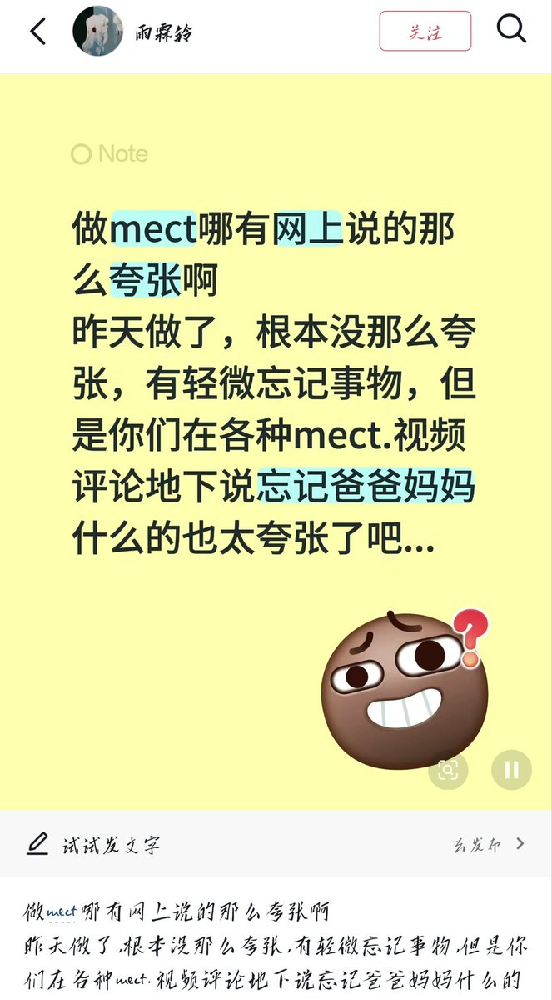

時璃風医詩🌈🏳️🌈
@hagishigure
其实我宁愿忘掉自己在成年前的所有经历包括爹妈是谁 也不想忘掉任何一个朋友。
等等，还是改成17岁前的所有经历吧，毕竟17岁的时候的几任亲密关系还是让我觉得幸福过的。

432InfantryRegiment
@432Ifantrygroup
我又要把mect拉出来批斗了。
首先忘掉爹妈确实很夸张，但据我了解忘掉好朋友这种是真实存在的，拿自己的经历否定别人这种逻辑我就很讨厌，给人一种自我中心主义的傲慢感。
其次抛开mect的作用机制不明确，不是循证医学是经验医学不谈，我们也应该认识到它是如气脑造影一样是操作粗糙技术原始的权宜之计 https://t.co/5tY3Oi1uFt